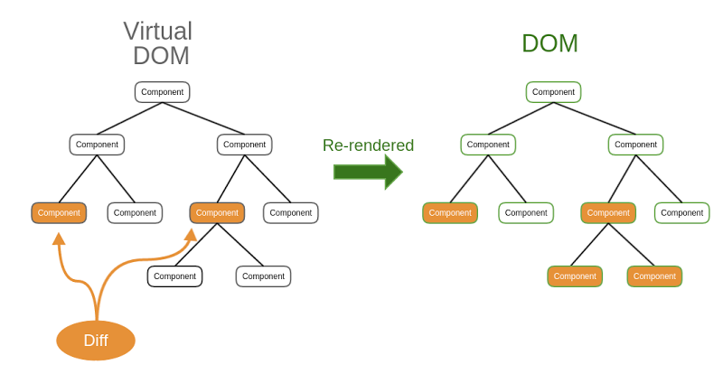
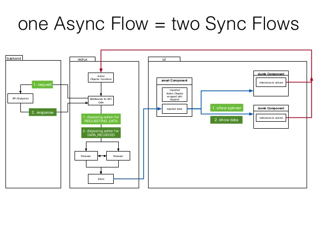
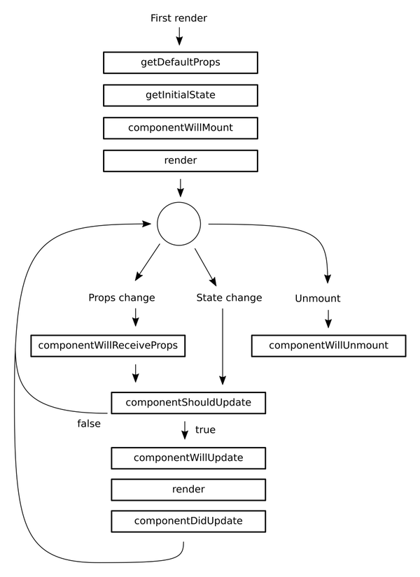
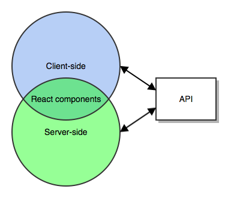

React.JS
La bibliothèque Javascript pour créer des interfaces utilisateurs
Par Adrien Bouttier @hibigbob
A propos

Adrien Bouttier @hibigbob
Lead développeur chez Wanadev - Lyon
Qu'est ce que React.JS ?
Une bibliothèque :
- créée par Facebook
- avec une première version en 2013
- qui permet de créer des interfaces utilisateurs
- qui gère que l'interface de l'application.
- qui est décrite comme la vue du modèle MVC.
- qui est connue pour être très performante.
Qui utilise React.JS ?


Comment fonctionne React.JS ?
Reprenons la base
React est une bibliothèque et non un framework
(Enfin du moins... officiellement !)
Qu'est ce qu'elle n'a pas ?
- de routeur
- de controlleur
- de gestion des modèles
- de service
- d'injection de dépendance
Quoi, pas de router ?
Oui officiellement, la bibliothèque n'inclut pas de routeur, par contre la communauté a créé une bibliothèque qui permet d'intégrer un routeur à React
et elle marche très bien
Mais qu'est ce qu'elle a ?
- des composants
- des composants
- et encore des composants
Avantages
Meilleure maîtrise de l'application.
Plus de liberté sur l'architecture.
Pas besoin d'apprendre un framework, on utilise React dans une application js.
Les performances.
Intégrable en application native mobile à l'aide de la bibliothèque "React Native".
Inconvénients
Temps de mise en place plus long.
Pas de framework donc mise en place "manuelle".
Besoin de mieux connaitre le langage Javascript.
Les fonctionnalités de React.JS
ReactJs, c'est :
"Just the UI"
"Virtual DOM"
"Data flow"
"Just the UI"
Donc une bibliothèque légère
Avec juste des composants
Qui est intégrable sur des projets déjà existants ou frameworks.
"Virtual dom"
"Data flow"
un patron de conception unidirectionnelle Les composants
La structure d'une page

On peut dire que les composants :
sont omniprésents
sont réutilisables
ne sont pas qu'un affichage : ils possèdent des données pouvant changer dans le temps. On peut faire changer des données uniquement dans un composant.
Les notions importantes d'un composant
Les "Props"
Ce sont les paramètres du composant
Ca peut être une action a exécuter dans le composant ou une donnée
Le state
L'état initial du composant
Cycle de vie d'un composant
Referencement avec React.JS
Isomorphisme ou server-side rendering
Les composants React peuvent être rendus simplement côté serveur.
Avantages
Le composant est déjà chargé en arrivant sur le navigateur.
Le googlebot peut donc "crawler" la page et la référencer.
React n'est pas la solution à tous
Pourquoi ?
Pourquoi VEVO, MSN et GOOGLE utilisent Angular ?
Pourquoi REDDIT et PINTEREST ont choisi Backbone ?
Pourquoi Linkedin, Netflix, Twitch et Captaintrain utilisent Ember ?
Pourquoi les boites chinoises (Alibaba, Baidu, Xiaomi) ont choisi VueJS
Déjà, parce que React.JS est une bibliothèque et non un framework.
Ils ont chacun leurs points forts et leurs points faibles.
Avis personnel
Déjà testé
EmberJs
J'aime beaucoup l'abstraction qu'il offre
A tester
VueJs
Je vous dirai ça